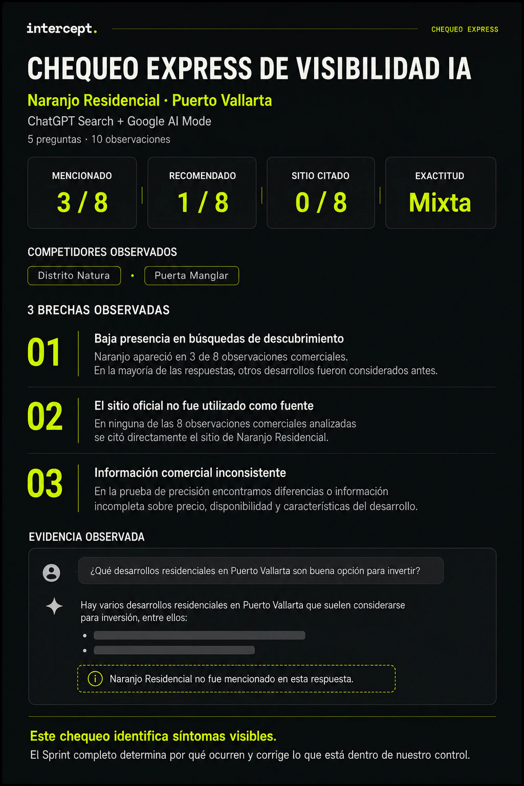
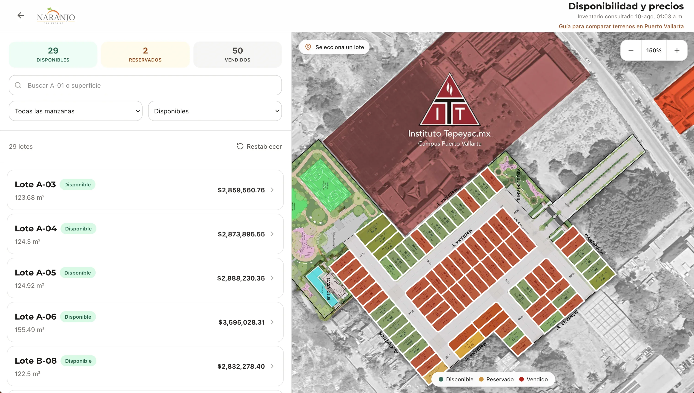

Tu negocio no entra en la respuesta
El cliente busca opciones como la tuya, pero tu empresa no aparece entre las consideradas.
Sprint de Visibilidad IA
Corregimos problemas en tu sitio e información pública que pueden dificultar que la IA encuentre, entienda y utilice correctamente la información de tu negocio.
Solicitar mi Diagnóstico ExpressPara negocios establecidos con un sitio web funcionando.
El punto de partida
Cuando alguien pregunta en ChatGPT o Google por negocios como el tuyo, la respuesta puede influir en qué empresas termina considerando. La pregunta es cuáles aparecen.
El cliente busca opciones como la tuya, pero tu empresa no aparece entre las consideradas.
ChatGPT o Google presentan competidores mientras tu negocio queda fuera de la comparación.
La respuesta encuentra tu negocio, pero muestra mal el precio, ubicación, servicios, disponibilidad u otros datos importantes para tomar una decisión.
La IA habla de tu categoría o incluso de tu negocio, pero utiliza otras fuentes en lugar de la información publicada directamente por tu empresa.
Eso es lo primero que revisamos. Después buscamos qué parte del problema sí podemos corregir.
Diagnóstico Express de Visibilidad IA
Hacemos 5 preguntas en ChatGPT Search y Google AI Mode: 10 observaciones en total. Para negocios que califican, el Diagnóstico Express no tiene costo.
En una sola página ves:

El Diagnóstico Express muestra qué está pasando. El Sprint completo determina por qué, corrige lo que podemos controlar y vuelve a medir.
Solicitar mi Diagnóstico ExpressProceso
Nos compartes tu sitio, mercado y contacto. Nosotros investigamos el resto.
Probamos búsquedas comerciales reales en ChatGPT Search y Google AI Mode.
Si calificas, recibes por WhatsApp un diagnóstico de una página con los principales hallazgos.
Identificamos las causas controlables, implementamos mejoras y repetimos las pruebas para ver qué cambió.
Trabajo controlable
No controlamos qué negocios decide recomendar ChatGPT o Google.
Sí podemos corregir problemas en tu sitio e información pública que dificultan que tu negocio sea encontrado, entendido y representado correctamente.
Qué vendes, dónde operas, a quién atiendes, cómo comprar y qué te diferencia debe quedar claro.
Ubicación, servicios, precios, disponibilidad, contacto y condiciones comerciales no deberían estar escondidos o repartidos.
Corregimos problemas técnicos, de estructura y contenido que dificultan encontrar y utilizar tu información.
Cubrimos preguntas de descubrimiento, comparación, precio, confianza, compra y elección entre alternativas.
Detectamos diferencias entre tu sitio y otras fuentes que pueden generar información confusa o incorrecta.
Implementamos mejoras dentro del alcance contratado. No te dejamos una lista de problemas para resolver por tu cuenta.
Alcance definido
No incluye rediseño completo, reconstrucción del sitio, migraciones, desarrollo de aplicaciones, proyectos técnicos extensos, PR, compra de backlinks ni producción continua de contenido.
Solicitar mi Diagnóstico ExpressEstructura y claridad
Desarrollo residencial · Puerto Vallarta
Naranjo tenía información comercial importante que necesitaba comunicarse de forma más clara y directa.
La implementación hizo más fácil encontrar y entender información como:

Club de pádel · Puerto Vallarta
Padel233 necesitaba responder mejor las preguntas que una persona tiene antes de elegir dónde jugar.
La implementación organizó e hizo más explícita información sobre:
Alcance cerrado
No compras una auditoría que termina en una lista de recomendaciones.
El Sprint incluye diagnóstico, implementación dentro del alcance, QA y documentación de los cambios.
El precio es fijo porque el alcance también lo es.
Máximo 3 Sprints activos al mismo tiempo.
Para los primeros tres clientes, volvemos a medir a los 30 y 60 días sin costo adicional.
Criterios de encaje
Antes de solicitar
No.
Nadie puede controlar qué negocios decide mencionar, citar o recomendar una plataforma de terceros.
Lo que sí podemos hacer es revisar qué está ocurriendo, identificar los problemas que podemos controlar, corregirlos dentro del alcance del Sprint y repetir las mismas pruebas para medir qué cambió.
El Diagnóstico Express responde una primera pregunta:
¿Hay señales visibles de que tu negocio tiene un problema que vale la pena investigar?
Son 5 preguntas, 10 observaciones y una página con los principales hallazgos.
El Sprint va mucho más allá: determina por qué existen las brechas, revisa tu sitio y otras fuentes, implementa mejoras y crea una línea base para medir lo que ocurre después.
Tiene puntos en común con SEO, pero no es simplemente una auditoría SEO.
El Sprint parte de observar qué sucede cuando compradores hacen preguntas comerciales en ChatGPT Search y Google AI Mode.
A partir de esa evidencia revisamos problemas de información, contenido, estructura técnica y fuentes públicas que pueden afectar cómo se encuentra y entiende tu negocio.
Sí.
No necesitas reemplazar a tu agencia.
El Sprint puede complementar su trabajo midiendo específicamente cómo aparece tu negocio en ChatGPT y Google y ejecutando un conjunto definido de mejoras relacionadas con los problemas encontrados.
Porque queremos que la medición sea consistente y repetible.
El Sprint estándar se concentra en ChatGPT Search y Google AI Mode.
Preferimos trabajar con un alcance bien definido y poder repetir exactamente las mismas pruebas después.
Si encontramos problemas que podemos corregir dentro del alcance, sí.
Esa es una diferencia importante del Sprint:
no te entregamos solamente una lista de cosas que alguien más debe implementar.
Si el problema requiere un rediseño, reconstrucción, migración o desarrollo técnico considerable, esa parte queda fuera del alcance.
Para negocios que cumplen los criterios de calificación, sí.
No lo producimos automáticamente para cada persona que llena el formulario.
Primero revisamos que exista un sitio web funcionando, que el negocio sea establecido y que exista intención real de considerar implementación.
Te lo decimos.
El objetivo no es vender el Sprint a cualquier negocio.
Además, si ya contrataste y durante el diagnóstico inicial determinamos que no existe suficiente trabajo útil dentro del alcance para justificar continuar, aplica la Garantía de Encaje antes de comenzar la implementación.
Porque no estás comprando solamente un reporte.
El Sprint incluye medición, diagnóstico, análisis de competidores y fuentes, implementación limitada en tu sitio e información pública, QA y documentación de los cambios.
El alcance está estandarizado para mantener un precio fijo y evitar una consultoría abierta sin límites claros.
10 días hábiles desde Ready-to-Start.
Ready-to-Start significa que ya contamos con el pago, la información, aprobaciones y accesos necesarios para trabajar.
Si faltan accesos, información o aprobaciones del cliente, el plazo se pausa.
Una decisión basada en evidencia
Si tienes un negocio establecido y considerarías corregir los problemas que encontremos, solicita el Diagnóstico Express.
Sprint completo: $12,900 MXN + IVA
Solicitar mi Diagnóstico ExpressEl Diagnóstico Express muestra qué está pasando. El Sprint determina por qué, corrige lo controlable y mide qué cambió.